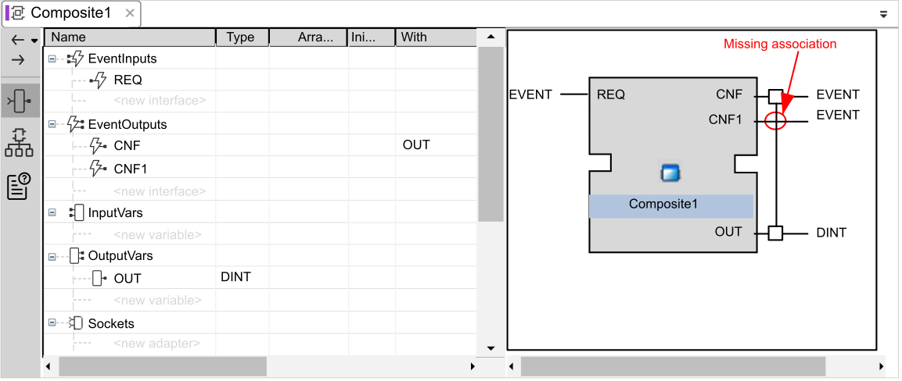
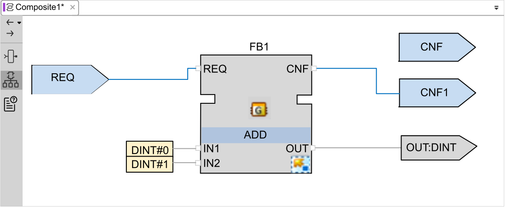
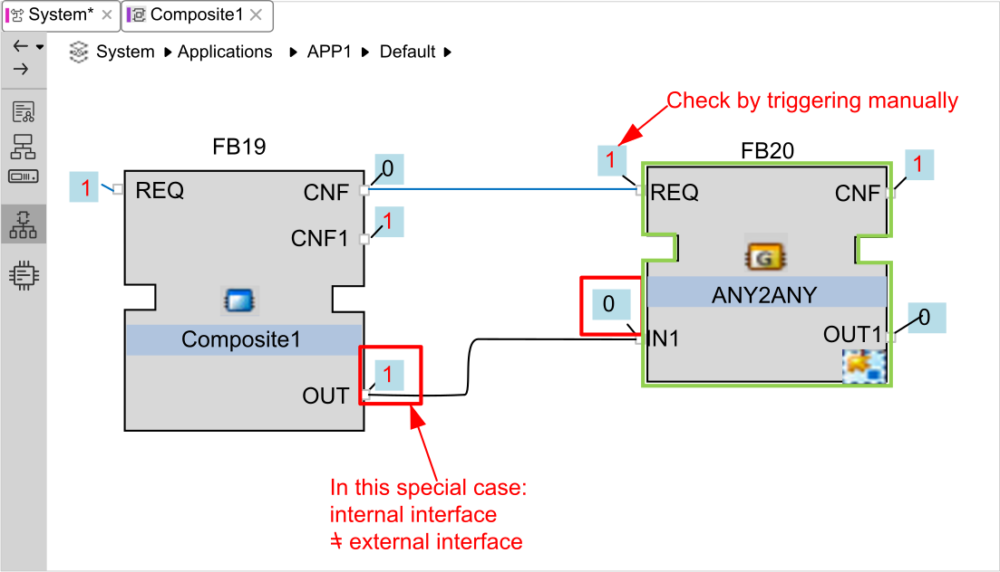

You can trigger events of a Composite function block from within the function block.
While watching the inner components of a Composite function block, you can trigger the event inputs of the Composite directly within this view by right-clicking on the event block and selecting Trigger Event. You do not need to move upwards to the next level upwards to do this.
At the input side of blocks the Watch displays the currently present values of the external interface of the block.
At the output side of blocks the Watch displays the currently present values of the internal interface of the block. This allows also watching those values which are not connected to a subsequent block.
The Watch is only updated when any output event on the block is triggered.
When watching the outputs of function blocks, consider the rules, as described above. Further on, when constructing function blocks, it has to be considered that the currently calculated data is available on the external interface of the block output only when the data output also has an Association to the fired event. In the example below, a calculated value at the data output is displayed in the Watch (internal interface). However, the value (still) does not exist at the external interface of the block, and therefore cannot be accessed from the following block. For this reason, a manual trigger of the event input on the subsequent block would not cause updating the data value as well. The calculated value simply is not available for processing with the next block, although it is visible at the watched point, because the watch has been updated by firing another associated event:



One way to find out the currently, actually applied data value at the external output interface of the block is to insert an additional block, as the ANY2ANY in the example image above. By manually triggering the input event you can update the data input. However, the data values of the two blocks are only identical now when the calculated data at the sender block (Composite1 in the image) was also transferred to the external interface by a correct execution of the block. Otherwise, you have to rethink the structure of the function block.
A look at the system log may provide an indication: 'No space for notification' shows that the runtime is going to pass something (e.g. the watches) but the space is not sufficient. Since the size of the buffer depends on the device and is defined by the configuration of the device, this detected error can occur at different block sizes depending on the device.
Adapting the buffer, of course, is only possible to a limited extent. First confirm the permissibility of the device used. In this case, the simplest solution is to reduce the concerned block by dividing the logic in multiple blocks.